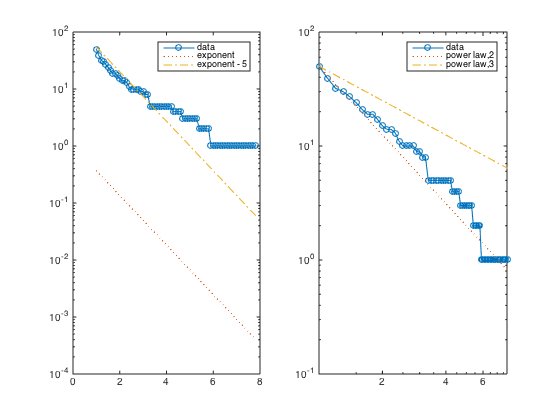
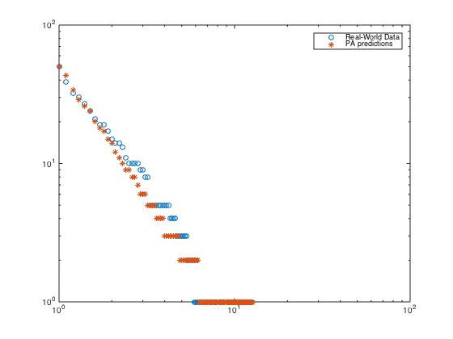
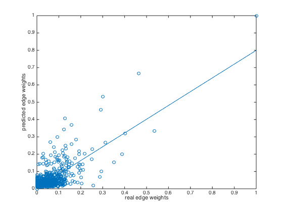

VALIDATING THE US-airpot DATASET (Prestige-based Attachment Model)
Bijan Ranjbar-Sahraei

This is the directed network of flights between US airports in 2010. Each edge represents a connection from one airport to another, and the weight of an edge shows the number of flights on that connection in the given direction, in 2010.
Source: http://konect.uni-koblenz.de/networks/opsahl-usairport
Contents
Importing Data
clear all load airport.mat
Preprocessing
Preprocessing the data to make it lower triangular and normalized.
n = size(data,1); % make adjacency matrix symmetric data = (data + data') / 2; % sort the airports based on their traffic degs = sum(data,1); [~, new_index] = sort(degs,'descend'); data = data(new_index,new_index); % Pick the top 50 airports data = data(1:50,1:50); n = 50; % Again sort them based on their traffic degs = sum(data,1); [~, new_index] = sort(degs,'descend'); data = data(new_index,new_index); data_tril = tril(data,-1);
Whenever an agent doesn't have any decendent, we give it a self loop.
for i = 1 : n if sum(data_tril(i,:)) == 0 data_tril(i,i) = 1; end end data_normalized = data_tril ./ (sum(data_tril,2) * ones(1,n)) ;
Extracting the network hierarchy
H = data_normalized > 0; W_tril = tril(data_normalized,-1); W = W_tril + W_tril'; for i = 1 : n if sum(W_tril(i,:)) == 0 W(i,i) = 1; end end
Degree Distribution
Here we compare the degree distribution with exponential and power law distributions.
ccdf_x = 1:.1:max(sum(W,2)); % the partitions of the x-axis df_hist = hist(sum(W,2),ccdf_x); ccdf_hist = cumsum(df_hist(end:-1:1)); ccdf_hist = ccdf_hist(end:-1:1); % computing the cummulative degree distribution subplot(121) semilogy(ccdf_x, ccdf_hist,'-o') hold on semilogy(ccdf_x, exp(-ccdf_x),':') % approximation of power law semilogy(ccdf_x, exp(5-ccdf_x),'-.') % approximation of power law legend('data','exponent','exponent - 5') subplot(122) loglog(ccdf_x, ccdf_hist,'-o') hold on loglog(ccdf_x, n * ccdf_x.^(-2),':') % approximation of power law loglog(ccdf_x, n * ccdf_x.^(-1),'-.') % approximation of power law legend('data','power law,2','power law,3')
Strength Distribution Predictions
Using the hierarchy network, we generate the PA model and compare the predicted strength distributions and real distribution.
Wg = genericModel(H,'PA'); ccdf_x_g = 1:.1:max(sum(Wg,2)); % the partitions of the x-axis df_hist_g = hist(sum(Wg,2),ccdf_x_g); ccdf_hist_g = cumsum(df_hist_g(end:-1:1)); ccdf_hist_g = ccdf_hist_g(end:-1:1); % computing the cummulative degree distribution
figure loglog(ccdf_x,ccdf_hist,'o') hold on loglog(ccdf_x_g,ccdf_hist_g,'*') legend('Real-World Data','PA predictions')
Edge Comparison
In the previous section we showed the predictions of strength distributions. In this section, we compare the single weights with each other.
edges = tril(W,-1); edgesG = tril(Wg,-1); figure plot(edges(:),edgesG(:),'o'); lsline xlabel('real edge weights') ylabel('predicted edge weights')